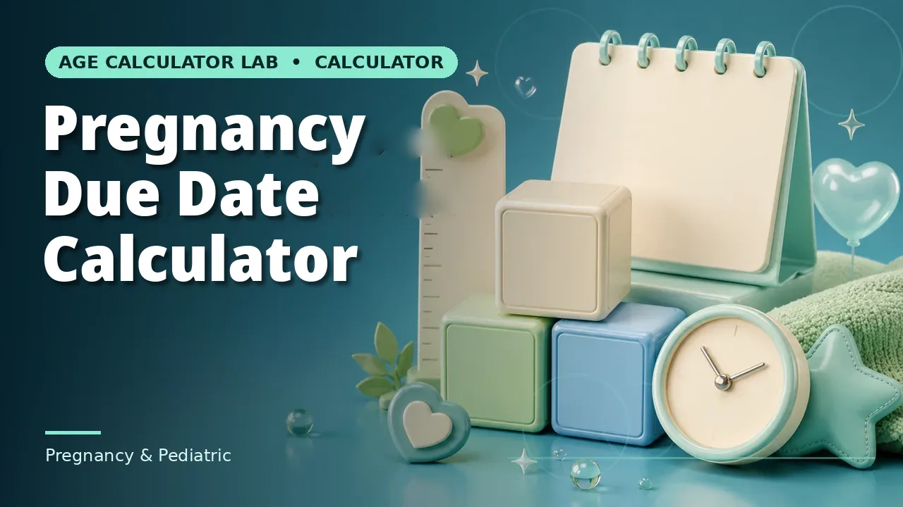
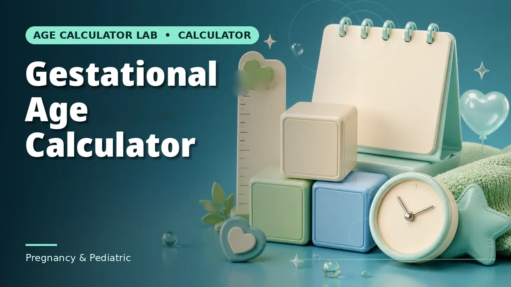

Quick answer
26 weeks (182 days) for the first two children; 12 weeks (84 days) for the third child onwards and for adopting or commissioning mothers. Eligibility: at least 80 days worked in the 12 months before the expected delivery. Leave is paid at the average daily wage.
The durations
The Maternity Benefit Act, 1961, as amended in 2017, grants 26 weeks of leave for the first two children and 12 weeks for the third child onwards. A woman who legally adopts a child below three months of age, and a commissioning mother, receive 12 weeks from the date the child is handed over.
In days: 26 weeks is 182 days and 12 weeks is 84 days. The leave period runs from the start date for that many days, so a 26-week leave starting 1 January 2027 ends 1 July 2027 and returns to work on 2 July 2027. A 12-week leave starting 1 March 2027 ends 23 May 2027 and returns 24 May 2027.
Who qualifies — including contract workers
A woman who has worked at least 80 days in the 12 months immediately preceding her expected date of delivery, in an establishment covered by the Act (generally, establishments with 10 or more employees, with state variations). The 80 days need not be continuous.
The law does not distinguish regular from contract employees: a contract worker who meets the 80-day test is entitled, and denial on contract status alone is unlawful — a point confirmed in court rulings and a frequent source of disputes. Women in establishments below 10 employees, daily-wage workers outside coverage, the self-employed and apprentices are generally not covered. If either condition is in doubt, confirm with the employer before relying on the dates: eligibility is not something a date calculator can judge.
How to apply
Give written notice to the employer stating the date from which you will be absent, ideally well before the leave starts — guidance commonly cited is around 12 weeks before the expected delivery, and the Act’s framework expects notice within roughly 8 weeks before delivery — together with a medical certificate confirming the pregnancy. Many employers handle this through HR or an HRMS portal, but the legal requirement is the written notice itself.
If leave was not applied for before delivery, it can still be applied for after childbirth, within 6 weeks of delivery, with the medical certificate of delivery and the leave period required. On return, the woman is entitled to her original position or an equivalent one.
When the leave can start
Up to 8 weeks (56 days) of a 26-week leave may be taken before the expected delivery date; for a 12-week leave, up to 6 weeks may precede delivery. The total does not change with the start date — starting earlier simply shifts the split toward the pre-delivery side. For a due date of 26 February 2027, the earliest pre-delivery start is 1 January 2027, giving 56 days before and 126 days after delivery on a 26-week leave.
In practice the start date is chosen with the employer, balancing medical advice, handover and the mother’s preference. The calculator’s due-date hint (due date minus 56 days) is the earliest start, not a recommendation.
Pay during leave
Maternity benefit is paid at the rate of the average daily wage for the period of absence, computed from the wages for days worked in the three months immediately preceding the leave (the Act’s older formulation also references minimum wages and a floor, with the highest applicable figure governing). The employer must pay it; the Act also requires nursing breaks and, in larger establishments, crèche facilities, though those are separate from the leave dates.
Benefits most guides leave out
Miscarriage or medical termination of pregnancy: 6 weeks of leave. Tubectomy operation: 2 weeks. Illness arising out of pregnancy, delivery, premature birth or miscarriage: up to 1 additional month. Medical bonus: where the employer does not provide pre-natal and post-natal care free of charge, a prescribed bonus is payable (₹3,500 under the earlier Act — confirm the current amount).
Work from home after leave is possible by agreement where the nature of work permits. Nursing breaks — two a day until the child is about 15 months old, in addition to normal rest — and crèche facilities in establishments with 50 or more employees, with permitted visits during the day, are entitlements, not favours. Non-compliance is serious: failure to pay maternity benefit or denying entitled leave can attract imprisonment of up to one year, a fine, or both.
Questions people actually ask
Is maternity leave increased to 9 months? No — the maximum is 26 weeks (6 months in common speech, 182 days exactly) for the first two children. Can you take 12 months? No. Do husbands get maternity leave? There is no provision for paternity or maternity leave for fathers under Indian labour law. Can you take leave after joining a new company? Yes, if you have completed 80 days with the new company before availing leave. And twins do not add leave: the Act grants 26 weeks for the first two children regardless of single or multiple birth.
Common mistakes to avoid
Quoting “six months” as if it were the Act (it is 26 weeks, which is 182 days, not a calendar half-year); assuming twins add leave (they do not, under the Act); assuming the leave must start on the due date (up to 8 weeks may precede it); treating the calculator’s dates as an eligibility decision; and accepting a denial on contract status without checking the 80-day test.
Related calculators
Use the Maternity Leave Calculator for the dates, and the pregnancy tools for the due date that anchors them.


Frequently asked questions
How long is maternity leave in India?
26 weeks for the first two children, and 12 weeks for the third child onwards, under the Maternity Benefit Act as amended in 2017.
Who qualifies for maternity leave?
A woman who has worked at least 80 days in the 12 months before her expected delivery, in a covered establishment. Contract workers who meet the test are covered.
How do I apply for maternity leave?
Give written notice to the employer with a medical certificate confirming pregnancy, ideally around 12 weeks before the expected delivery. Leave can still be applied for within 6 weeks after delivery.
When can maternity leave start?
Up to 8 weeks before the expected delivery date for a 26-week leave (6 weeks for a 12-week leave); the rest falls after delivery. The total length does not change.
Is maternity leave paid?
Yes, at the average daily wage based on the three months before the leave, for the full duration of eligible leave.
What about miscarriage or tubectomy?
Miscarriage or medical termination: 6 weeks. Tubectomy: 2 weeks. Illness arising from pregnancy: up to 1 additional month.
Is leave longer for twins?
No. The Act grants 26 weeks for the first two children regardless of single or multiple birth.
What about adopting a child?
A woman adopting a child below three months, and a commissioning mother, receive 12 weeks from the date the child is handed over.
Can I take leave after joining a new company?
Yes, if you have completed 80 days with the new company before availing leave.
What if my employer refuses maternity leave?
Non-compliance can attract imprisonment of up to one year, a fine, or both. Complaints go to the Inspector appointed under the Act.